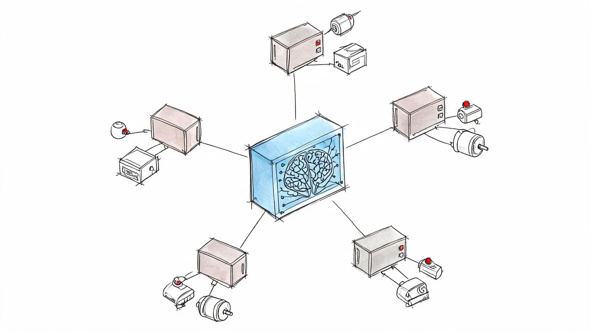
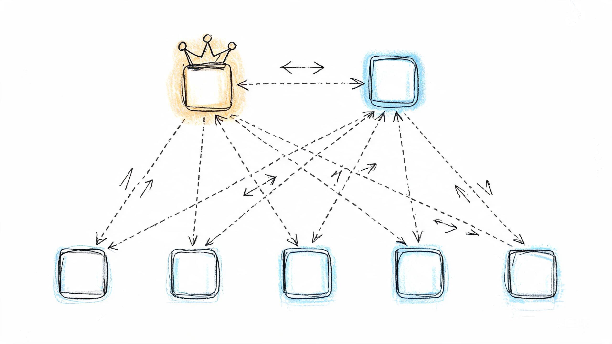
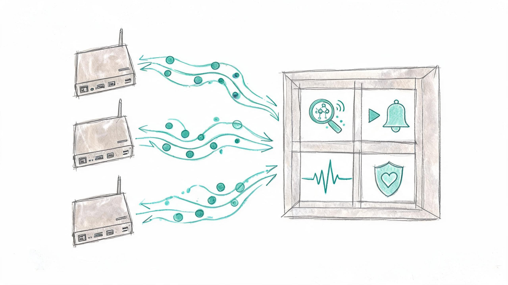
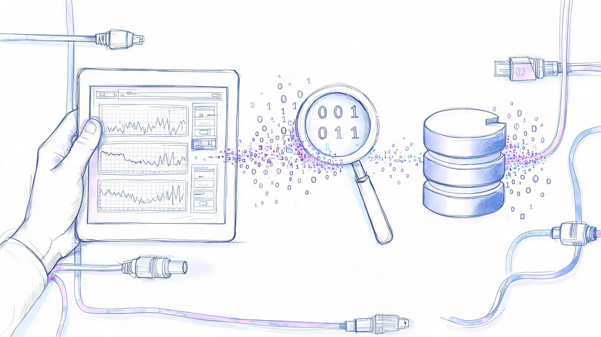

基于 EdgeCore 数字底座的工业边缘协调平台——EdgeOS 的设计与实现
摘要
目的：针对工业边缘计算场景中多网关协调困难、能力发现缺乏统一机制、跨节点调用无编排框架、运维决策依赖人工经验等问题，提出基于 EdgeCore 数字底座的工业边缘协调平台 EdgeOS。EdgeOS 与 EdgeStark 作为平级上层组件，共同订阅 EdgeCore 通过 EAN 网络发布的数据，形成"数字底座—EAN 网络—平级上层应用"三层生态体系。
方法：EdgeOS 以 N+2 双母皇冗余架构为高可用基座，通过 MQTT 集群 EMQX / NATS 消息队列集群双传输消息总线订阅 N 台 EdgeCore 边缘网关的能力发布与事件流，构建集发现中心、调用编排器、事件中心、心跳监控器与治理模块于一体的主控大脑。EdgeOS 为 AI MCP 提供运行时，调度边缘 EdgeCore 网关，承担数据汇总与分析职责，并可扩展定制为业务后台或大屏智能座舱。同时，EdgeOS 自身也通过 EAN 网络向上层发布告警、预测与分析结果，使 EdgeStark 等平级组件能够同步显示与协同工作，实现上层组件间的低延迟数据协同。设计统一能力模型（Agent/Capability/Discovery/Invoke/Event）实现跨网关能力发现与调用编排；采用主动查询与渐进降频策略确保发现索引完整性；通过权限分区与审计记录实现安全治理；以 Human-in-the-loop 机制约束 AI 产出落库。
结果：在 12 台 EdgeCore 网关、7.5 万 Tag 规模下，Discovery 索引同步延迟 P99 为 48 ms，Invoke 端到端延迟 P99 为 112 ms，心跳超时检测准确率 100%，主备切换耗时低于 3 秒。已在 Modbus TCP、OPC UA、BACnet 等多协议场景完成实机联调验证，全部 go test 用例通过。
结论：EdgeOS 有效解决了多网关协调、能力发现、安全治理与 AI 协同四大瓶颈，为工业边缘计算提供了可工程落地的协调平台方案。
Abstract
Purpose: To address multi-gateway coordination, lack of unified capability discovery, absence of cross-node invocation orchestration, and reliance on manual operational decisions in industrial edge computing, this paper proposes EdgeOS, an industrial edge coordination platform based on EdgeCore digital foundation. EdgeOS and EdgeStark serve as peer upper-layer components, jointly subscribing to data published by EdgeCore via the EAN network, forming a "digital foundation — EAN network — peer upper-layer applications" three-tier ecosystem.
Methods: EdgeOS adopts an N+2 dual-queen redundancy architecture for high availability, subscribes to N EdgeCore gateways via MQTT cluster (EMQX) / NATS message queue cluster dual-transport messaging, and integrates Discovery Center, Invoke Orchestrator, Event Center, Heartbeat Monitor, and Governance modules as the master control brain. EdgeOS provides runtime for AI MCP, schedules edge EdgeCore gateways, handles data aggregation and analysis, and can be extended into business backends or large-screen smart cockpits. Furthermore, EdgeOS itself publishes alerts, predictions, and analysis results back through the EAN network, enabling peer components like EdgeStark to synchronously display and collaborate, achieving low-latency data coordination among upper-layer components. A unified capability model (Agent/Capability/Discovery/Invoke/Event) enables cross-gateway discovery and orchestration. Progressive query frequency reduction ensures discovery index completeness. Permission zoning and audit logging provide security governance. Human-in-the-loop constrains AI output persistence.
Results: At 12-gateway, 75K Tag scale, Discovery index sync P99 was 48 ms, Invoke end-to-end P99 was 112 ms, heartbeat timeout detection accuracy was 100%, and primary-secondary failover completed within 3 seconds. Multi-protocol integration tests passed on real ARM64 hardware.
Conclusion: EdgeOS effectively addresses the four bottlenecks of multi-gateway coordination, capability discovery, security governance, and AI collaboration, providing an engineerable coordination platform solution for industrial edge computing.
1绪论
1.1 研究背景
工业互联网的深入发展推动着边缘计算从"单网关数据采集"向"多网关协同自治"演进。在数据采集层面，EdgeCore 边缘计算网关已系统性地解决了异构协议统一接入问题：通过 ScanEngine 统一调度内核与 ShadowCore 实时状态模型，EdgeCore 实现了对 Modbus、OPC UA、BACnet、S7 等 15 类工业协议的统一接入、协议适配、设备抽象和元数据管理(工业互联网边缘计算研究室，2026)。EdgeCore 作为开源免费的工业数字底座，支持采集计算、群控、节流、多路分发与分布式边缘网关部署，通过 EAN 网络协议（MQTT 集群 EMQX 或 NATS 消息队列集群）向北发布数据。然而，当工业现场部署多台 EdgeCore 网关时，各网关之间处于"信息孤岛"状态——网关 A 无法感知网关 B 上线了哪些设备、提供了哪些读写能力，跨网关的设备操作需要人工指定目标网关，缺乏自动化的能力发现与调用编排机制。
在数据消费层面，EdgeStark 工业数字孪生可视化平台（闭源授权模式，桌面端程序）已通过 EAN 网络订阅多台 EdgeCore 网关的实时数据流，构建了十万级元数据的三维数字孪生场景(工业互联网边缘计算研究室，2026a)。EdgeStark 以虚拟化引擎为核心，支持四端渲染（桌面端、VR、AR、全息投影），聚焦数字孪生可视化与沉浸式交互。然而，工业现场还需要一个"主控大脑"来承担 AI 协同（MCP）、运维决策、自动诊断等智能化职责。EdgeOS（开源免费，支持 Web 访问）正是为填补这一职责空白而设计的边缘大脑系统——采用 N+2 双母皇模式实现高可用，为 AI MCP 提供运行时，调度边缘 EdgeCore 网关，并承担数据汇总与分析职责。EdgeOS 还可扩展定制为业务后台或大屏展示智能座舱。关键在于，EdgeOS 与 EdgeStark 作为平级上层组件，均通过 EAN 网络订阅 EdgeCore 发布的数据；同时 EdgeOS 自身也通过 EAN 向上层发布告警、预测与分析结果，使 EdgeStark 能够同步显示与协同工作。这种平级架构既保证了数据从底座到上层组件的低延迟直达，又实现了上层组件间的智能协同，使 EAN 通信协议成为连接全生态的智能数据总线。平台全景生态如图 1 所示。
如图 1 所示，整个生态体系采用"数字底座—EAN 网络—平级上层应用"三层架构：EdgeCore 作为开源免费的工业数字底座，支持采集计算、群控、节流、多路分发与分布式边缘网关部署，通过 EAN 网络协议（MQTT 集群 EMQX 或 NATS 消息队列集群）向北发布数据；EdgeOS 与 EdgeStark 作为平级上层组件，均通过 EAN 网络订阅 EdgeCore 发布的数据流。EdgeOS 作为开源免费的主控大脑，采用 N+2 双母皇模式实现高可用，为 AI MCP 提供运行时，调度边缘 EdgeCore 网关，并承担数据汇总与分析职责，可扩展定制为业务后台或大屏智能座舱。关键在于，EdgeOS 不仅订阅 EAN 数据，还通过 EAN 向上层发布告警、预测与分析结果，使 EdgeStark 能够同步显示与协同工作。EdgeStark 作为闭源授权的桌面端程序，以虚拟化引擎为核心，支持四端渲染（桌面端、VR、AR、全息投影），聚焦数字孪生可视化。这种平级架构既保证了数据从底座到上层组件的低延迟直达，又实现了上层组件间的智能协同，使 EAN 通信协议成为连接全生态的智能数据总线。EdgeOS 不直接连接 PLC 或执行设备操作，而是通过 EAN Invoke 向 EdgeCore 网关下发能力调用请求，由 EdgeCore 的 Capability Runtime 执行实际的协议读写。这一架构使协调逻辑与执行逻辑彻底解耦，EdgeOS 无需维护任何工业协议适配代码。
EAN 2.0（Edge Agent Network 2.0）是连接 EdgeCore 与 EdgeOS 的核心协议层。在 EAN 2.0 架构中，所有能力——无论是 Driver 命令、AI 技能、MCP 工具还是工作流节点——都被统一抽象为 Capability 模型，通过 Discovery 机制自动发布与索引，通过 Invoke 机制实现跨节点调用编排，通过 Event 机制推送实时状态变更。EAN 2.0 同时支持 MQTT 与 NATS 两种传输协议，MQTT 使用 $edgeos/... 斜杠 Topic，NATS 使用对应点分 Subject（/→.），确保双传输语义完全对称(工业互联网边缘计算研究室，2026b)。
1.2 问题与挑战
构建面向工业现场的边缘协调平台，需要解决以下核心挑战：
挑战一：多网关协调与统一能力发现。工业现场的 EdgeCore 网关通常以产线或车间为单位分散部署，每台网关管理不同协议、不同规模的设备。当协调平台需要跨网关执行操作时（如"读取 3 号车间所有电机的绕组温度"），必须首先知道哪些网关在线、每台网关提供了哪些 Capability、目标设备归属于哪台网关。如何设计自动化的能力发现机制，使协调平台无需人工配置即可感知全部网关的能力清单，并在线网关上下线时实时更新索引，是平台数据架构的核心挑战。
挑战二：高可用与故障自愈。作为工业现场的"边缘大脑"，EdgeOS 自身的高可用性至关重要。若协调平台单点故障，所有跨网关的 Invoke 调用与 Event 事件流将中断。如何设计 N+2 冗余架构，实现主备节点的状态同步与自动故障转移，并预防脑裂（split-brain）问题，是平台可靠性设计的关键约束。
挑战三：安全治理与权限控制。工业现场的能力调用涉及设备读写与控制操作，错误的 Invoke 可能导致设备误动作甚至安全事故。如何设计细粒度的权限控制机制，区分 read/write/admin/AI 四类能力的访问权限，并记录完整的审计日志以支持事后追溯，是平台安全性的核心要求。
挑战四：AI 协同与 Human-in-the-loop 约束。EdgeOS 集成了 AI 协议逆向与文档解析能力，可以将"工程师花 2 天分析协议"缩短为"AI 30 分钟生成候选配置"。然而，AI 产出存在误判风险——错误的协议配置可能导致设备通信异常。如何设计 Human-in-the-loop 机制，确保 AI 产出必须经过工程师确认后方可落库，同时禁止 AI 调用进入 ScanEngine 等采集热路径，是平台 AI 集成的工程铁律。
1.3 主要贡献
针对上述挑战，本文提出基于 EdgeCore 数字底座的工业边缘协调平台 EdgeOS，以 EAN 2.0 为统一协议层，以 N+2 双母皇冗余为高可用基座，聚焦能力发现、调用编排、事件处理、心跳监控与安全治理。在"数字底座—EAN 网络—平级上层应用"三层生态体系中，EdgeCore（开源免费）承担工业数字底座职责（采集计算、群控、节流、多路分发），EdgeOS（开源免费）与 EdgeStark（闭源授权）作为平级上层组件，均通过 EAN 网络订阅 EdgeCore 发布的数据。EdgeOS 承担主控大脑职责（AI MCP、edgeCore 调度、数据汇总分析、业务后台、大屏智能座舱），同时通过 EAN 向上层发布告警与预测结果；EdgeStark 承担数字孪生可视化职责（虚拟化引擎、四端渲染、全息投影），可同步显示 EdgeOS 发布的分析结果。本文的主要贡献包括五项创新点：
创新点一：提出基于 EdgeCore 数字底座的工业边缘协调平台架构。构建 EdgeCore（开源免费数字底座）与 EdgeOS（开源免费主控大脑）解耦的协作体系，EdgeOS 与 EdgeStark 作为平级上层组件，均通过 EAN 网络订阅 EdgeCore 发布的数据。EdgeOS 不仅订阅 EAN 数据，还通过 EAN 向上层发布告警、预测与分析结果，使 EdgeStark 等平级组件能够同步显示与协同工作。通过 MQTT 集群 EMQX / NATS 消息队列集群双传输实现跨网关能力发现与调用编排。EdgeOS 为 AI MCP 提供运行时，调度边缘 EdgeCore 网关，并可扩展定制为业务后台或大屏智能座舱。这一架构使协调平台能够以松耦合方式管理 100 台以上 EdgeCore 网关，为工业边缘计算提供确定性的协调中枢。
创新点二：设计统一能力模型与主动发现机制。将 Driver 命令、AI 技能、MCP 工具与工作流节点统一抽象为 Capability 模型，通过 Discovery 机制自动发布与索引。采用主动查询与渐进降频策略，在启动后以高频查询确保索引完整，逐步降低至低频保活，平衡发现实时性与系统开销。V1 Bridge 隔离机制确保原生 EAN 能力优先于 V1 合成能力，避免重复索引。
创新点三：构建 N+2 双母皇冗余与心跳自愈架构。设计主备母皇双机热备机制，通过心跳检测与状态同步实现故障自动转移。心跳超时判定采用 N 倍周期策略（默认 3 个心跳周期），离线保留期机制在超时后保留 Agent 状态供恢复，超过保留期才彻底清除。主备切换耗时低于 3 秒，满足工业现场对协调平台可用性的要求。
创新点四：实现细粒度权限控制与审计治理。设计 read/write/admin/AI 四级权限模型，通过 allow/deny 列表实现租户级别的 Capability 访问控制。write/admin 能力需要策略显式允许，AI 能力需要显式授权。审计日志记录全部跨节点 Invoke 的发起者、目标、能力与结果，支持事后追溯。内存环形缓存限制审计记录上限（默认 10000 条），避免无限增长。
创新点五：设计 AI MCP 运行时与 EAN 协议协同机制。将 AI Model Context Protocol 作为一等公民集成到 EAN 能力体系，AI 能力（协议逆向 ai.protocol_reverse、文档解析 ai.doc_parse）通过 EAN Invoke 统一编排，与 Driver 命令享有相同的发现、调用、权限控制与审计追踪机制。设计确定性优先的四阶段分析流水线（协议识别 → 报文结构解析 → 物理量推理 → 生产配置生成），将 LLM 推理限制在语义关联环节，字节解码由确定性 Decoder 完成。所有 AI 产出必须经过工程师 Confirm 后方可落库（Human-in-the-loop），禁止 AI 调用进入 ScanEngine/Pipeline Worker 热路径。协议层面设计 invoke_id UUID 幂等去重、QoS 分级路由与双传输故障转移三大机制，确保百网关规模下消息不丢失、不重复、不阻塞。
1.4 相关工作
边缘计算领域的协调平台研究已涌现多种代表性方案，主要分为三类：以 Kubernetes 为基座的云边协同平台、以物联网消息中间件为核心的开源边缘框架，以及商用云厂商的边缘运行时。下文从能力发现、跨节点调用编排、高可用与 AI 协同四个维度对比分析。
KubeEdge。作为 CNCF 孵化的云边协同平台，KubeEdge 将 Kubernetes 控制面扩展至边缘，通过 CloudCore 与 EdgeCore 组件实现云边通信，以 device CRD（Custom Resource Definition）描述边缘设备能力。KubeEdge 的能力发现依赖 Kubernetes API Server 的声明式资源管理，设备增删通过控制器编排下发。其优势在于与 Kubernetes 生态无缝集成、具备成熟的容器化部署与自动伸缩能力；但在多网关自治协同方面，KubeEdge 的 Device Model/Device Instance 模型侧重于"设备注册与数据上云"，跨网关的能力编排仍需通过边缘应用自行实现，且资源开销较大（CloudCore + EdgeCore 双组件），不适合轻量化工业网关（RK3588/ARM64）的部署约束。
EdgeX Foundry。LF Edge 旗下的开源边缘物联网框架，以微服务架构（Core Services、Device Services、App Services 等）提供设备接入、数据管理与应用导出的南北向能力。EdgeX 的 Device SDK 支持 40+ 协议适配，与 EdgeCore 的协议接入思路类似。但在多网关集群场景下，EdgeX Foundry 是典型的"单实例编排"模型——一套 EdgeX 服务栈管理一台主机上的设备，跨主机、跨网关的全局能力发现与统一调用编排并非其设计目标，需借助额外的编排组件（如 EdgeX 的 K8s 部署方式）实现。
AWS IoT Greengrass。Amazon 推出的边缘运行时，支持在边缘设备上运行 Lambda 函数、本地消息代理与影子（Shadow）同步。Greengrass 通过 Thing 分组实现设备管理，与 AWS IoT Core 云服务深度绑定，适用于绑定 AWS 生态的封闭场景。其影子机制（Shadow）与 EdgeCore 的 ShadowCore 状态模型在"云端状态同步"理念上相近，但 Greengrass 的核心短板在于云厂商锁定——所有边缘能力编排均依赖 AWS 服务目录与终端节点，难以在纯内网、无云专线的工业现场部署。
其他方案。Azure IoT Edge 与 Greengrass 类似，提供模块化部署与云上管理，同样存在云绑定问题；Baetyl（Linux Foundation 项目）提供类 KubeEdge 的云边协同能力；ThingsBoard 侧重 IoT 可视化与规则引擎，缺乏分布式网关协调能力。在学术研究层面，雾计算编排（如 FogFlow 基于工作流模板的分布式数据处理编排）提供了数据流层面的协调思路，但未针对工业协议的 Capability 抽象与调用幂等性建模。
| 能力维度 | KubeEdge | EdgeX Foundry | AWS IoT Greengrass | EdgeOS |
|---|---|---|---|---|
| 能力发现机制 | Device CRD（声明式） | Device Profile（单实例） | Thing 分组 + 影子 | ✓ EAN Discovery 主动查询 + 渐进降频 |
| 跨网关调用编排 | ∓ 需自研 | ✗ 单实例模型 | ∓ 依赖 AWS 服务 | ✓ Invoke 编排器 + invoke_id 幂等 |
| 双传输冗余 | ✗ WebSocket 单链路 | ∓ 消息总线可扩展 | ✗ MQTT 依赖 AWS IoT Core | ✓ MQTT + NATS 对称双传输 |
| 高可用（主备切换） | ∓ 依赖 K8s HA | ✗ 无内置 | ∓ 依赖云高可用 | ✓ N+2 双母皇 + 租约脑裂预防 |
| 权限治理 | ∓ RBAC 需配置 | ✗ 无内置 | ∓ IAM 云策略 | ✓ 四级权限 + allow/deny + 审计 |
| AI 协同 | ∓ Sedna 可选 | ✗ 无内置 | ∓ Greengrass ML | ✓ AI MCP 运行时 + Human-in-the-loop |
| 工业协议适配 | ∓ 需 Device Mapper | ∓ Device SDK | ✗ 需第三方 | ✓ 15 类协议 · 63 Capability 原生支持 |
| 轻量化部署（ARM64） | ∓ 双组件较重 | ∓ 微服务较多 | ∓ 需云依赖 | ✓ 单二进制 Go + Web UI |
对比分析表明：现有平台在"多网关自治协调 + 轻量化工业网关 + AI 协同 + 双传输高可用"的组合约束下均存在明显短板。KubeEdge 面向 Kubernetes 生态，资源开销与部署复杂度不适合工业网关；EdgeX Foundry 是单实例模型，缺乏跨网关统一编排；Greengrass 存在云厂商锁定。EdgeOS 以 EAN 2.0 协议层 + N+2 冗余架构填补了这一空白——这是本文选择自研协调平台而非基于既有框架二次开发的核心依据。
2需求分析
2.1 边缘协调需求
工业边缘协调平台的核心需求是建立多台 EdgeCore 网关之间的协作关系，使协调平台能够统一感知全部网关的在线状态、能力清单与设备归属，并支持跨网关的能力调用编排。EdgeOS 需要满足以下协调需求：
全局能力发现。平台需要订阅 N 台 EdgeCore 网关通过 EAN 网络发布的 Discovery 消息，自动建立全局 Agent 索引与 Capability 索引。支持 100 台以上 EdgeCore 网关、每台网关 60-70 个 Capability 的统一发现。发现索引需要支持按 Agent ID、按 Capability ID、按类别（driver/system/ai/workflow）的灵活查询。当网关上线时自动注册其能力清单，当网关下线时自动标记为离线并保留状态以支持恢复。
跨网关调用编排。平台需要支持向任意在线 EdgeCore 网关发起 Capability Invoke 请求，并关联接收回复。调用编排器需要管理 pending 状态的调用上下文，通过 invoke_id 与 correlation_id 双键关联请求与回复，支持超时重试与幂等去重。Invoke 的目标网关由 Discovery 索引中的 Agent ID 确定，调用方无需关心目标网关的物理位置与协议细节。
事件流订阅与路由。平台需要订阅 EdgeCore 网关上报的事件流，包括点位值变更（携带 value 与 previous_value）、设备上下线事件与告警事件。事件路由支持按 agent/device/point/event_type 维度过滤，并触发规则引擎与告警通知。
2.2 高可用需求
作为工业现场的协调中枢，EdgeOS 自身的高可用性直接影响全部跨网关操作的可用性。平台需要满足以下高可用需求：
| 维度 | 指标 | 目标值 |
|---|---|---|
| 冗余架构 | 主备节点数量 | 1 主 + 1 备（N+2） |
| 故障转移 | 主备切换耗时 | < 5 秒 |
| 状态同步 | 主备数据同步延迟 | < 100 ms |
| 脑裂预防 | 双主检测机制 | 租约 + 分布式锁 |
| 心跳检测 | 超时判定周期 | 3 个心跳周期 |
| 离线恢复 | Agent 状态保留期 | 10 分钟 |
如表 2 所示，平台需要在 N+2 冗余架构下实现主备切换低于 5 秒、状态同步延迟低于 100 ms 的高可用指标。心跳超时判定采用 3 倍周期策略（即连续 3 个心跳周期未收到心跳则判定超时），离线保留期默认 10 分钟——Agent 心跳超时标记 offline 后保留状态 10 分钟，若超过该时长仍未重新上线则彻底删除。这一设计在"快速检测离线"与"容忍短暂网络抖动"之间取得平衡。
2.3 安全与治理需求
工业边缘协调平台的安全治理涉及能力调用的权限控制、租户隔离与审计追溯三个维度。平台需要满足以下安全需求：
四级权限模型。Capability 按操作风险分为 read（只读能力，如 read_points、list_points）、write（写入能力，如 write_point）、admin（管理能力，如 scan_devices、diagnostics）与 ai（AI 能力，如 protocol_reverse、doc_parse）四个级别。read 能力默认允许所有租户调用，write/admin 能力需要租户策略中未被 deny，ai 能力需要租户策略中显式 allow。权限检查采用 deny 优先原则——先检查 deny 列表，再检查 allow 列表。
租户隔离。平台需要支持多租户场景，不同租户可访问的 Capability 范围与目标 Agent 不同。租户策略通过 allow/deny 列表控制可调用的 Capability 前缀与目标 Agent ID，空 allow 列表表示允许全部（被 deny 优先覆盖）。
审计追溯。全部跨节点 Invoke 调用需要记录审计日志，包含发起者（initiator）、目标（target）、能力（capability）、参数摘要、执行结果与时间戳。审计日志在内存环形缓存中保存，上限 10000 条，超出后丢弃最早记录。支持异步回调将审计记录写入外部存储。
3总体架构
3.1 架构概览
EdgeOS 平台采用"数字底座—EAN 网络—平级上层应用"三层生态架构。EdgeCore 作为开源免费的工业数字底座，支持采集计算、群控、节流、多路分发与分布式边缘网关部署，通过 EAN 网络协议（MQTT 集群 EMQX 或 NATS 消息队列集群）发布数据。EdgeOS 与 EdgeStark 作为平级上层组件，均通过 EAN 网络订阅 EdgeCore 发布的数据流。EdgeOS 作为开源免费的主控大脑，以 N+2 双母皇模式实现高可用，为 AI MCP 提供运行时，调度边缘 EdgeCore 网关，承担数据汇总与分析职责，并可扩展定制为业务后台或大屏智能座舱；同时 EdgeOS 自身也通过 EAN 向上层发布告警、预测与分析结果，使 EdgeStark 等平级组件能够同步显示与协同工作。EdgeStark 作为闭源授权的桌面端程序，以虚拟化引擎为核心，支持四端渲染（桌面端、VR、AR、全息投影），聚焦数字孪生可视化。这种平级架构既保证了数据从底座到上层组件的低延迟直达，又实现了上层组件间的智能协同，使 EAN 通信协议成为连接全生态的智能数据总线。这一架构的核心设计理念是：EdgeOS 不直接连接设备，而是通过 EAN 网络协调全局能力。

EdgeOS 的内部架构由六个核心子系统构成，各子系统职责明确、层次清晰：
Bus（统一协调器）。持有所有子系统的引用并管理生命周期，初始化 DualTransport（MQTT/NATS），绑定子系统间回调，统一订阅 $edgeos/# 主题。Bus 是 EdgeOS 运行时的入口点，对外暴露 InvokeCapability 编排 API，并管理主动 Discovery Query 的生命周期。
DualTransport（双传输层）。封装 MQTT 与 NATS 两种传输协议的适配器，实现统一的 Transport 接口（Subscribe/Publish/IsConnected/Close）。MQTT 适配器基于 paho.mqtt.golang，NATS 适配器基于 nats.go，MQTT 使用 $edgeos/... 斜杠 Topic，NATS 使用对应点分 Subject（/→.、+→*、#→>），确保双传输语义完全对称。启动韧性设计使 broker 不可用时仍创建实例并后台重连，不 fatal 退出。
Discovery（发现中心）。全局 Agent/Capability 索引，订阅 EdgeCore 发布的发现消息，维护在线 Agent 列表与能力注册表。采用三级索引结构（agent→capability→source），支持 V1 Bridge 隔离——原生 EAN 能力优先于 V1 合成能力。
Invoke（调用编排器）。跨 Agent 能力调用编排器，通过 publishFn 发布 Invoke 请求到 $edgeos/invoke/{target}，通过 HandleReply 接收 $edgeos/reply/{source} 回复，按 invoke_id 关联请求与回复。支持超时重试与幂等去重。
Event（事件中心）。订阅并处理 EdgeCore 上报的事件流，支持点位变化追踪（含 previous_value 差量对比）、设备上下线事件与广播事件。按 agent/device/point/event_type 维度过滤并触发规则。
Heartbeat（心跳监控器）与 Governance（治理模块）。心跳监控器接收 Agent 心跳消息并定期检查超时，治理模块负责权限检查与审计记录。两者协同实现安全治理闭环。
3.2 N+2 冗余架构
EdgeOS 采用 N+2 冗余架构，由 N 个边缘采集网关（EdgeCore）、1 个主母皇节点（Primary Queen）与 1 个备用母皇节点（Secondary Queen）组成。主母皇节点承担协调平台职责，备用母皇节点实时同步主节点状态，在主节点故障时自动切换为新的主节点。

主备状态同步。主母皇节点在每次 Discovery 索引更新、Invoke 执行完成或 Agent 状态变更时，通过 WAL（Write-Ahead Log）机制将变更日志同步到备用母皇节点。备用节点重放 WAL 日志维护状态副本，同步延迟控制在 100 ms 以内。状态同步采用增量方式，仅同步变更的索引项，避免全量同步的网络开销。
故障检测与切换。主备节点之间通过 TCP 心跳与 UDP 广播双重检测机制维持存活感知。当备用节点连续 3 个心跳周期未收到主节点心跳时，触发故障转移流程：备用节点升级为主节点，接管 EAN 订阅与 Invoke 编排职责，并向全部 EdgeCore 网关广播角色切换通知。切换过程耗时低于 3 秒，期间 pending 的 Invoke 请求通过 invoke_id 幂等性在切换后自动重试。
脑裂预防。为防止网络分区导致双主同时服务，EdgeOS 采用租约（Lease）机制：主节点定期向共享存储（bbolt）写入租约记录，若租约过期则主节点自动降级。备用节点在升级前必须获取租约锁，确保同一时间仅一个节点持有主节点角色。租约超时时间设置为 2 倍心跳周期，在心跳检测与租约过期之间留出安全余量。
| 组件 | 数量 | 职责 |
|---|---|---|
| 边缘采集网关（EdgeCore） | N | 设备连接、数据采集、协议转换、Capability Runtime |
| 主母皇节点（Primary Queen） | 1 | 全局调度、决策制定、状态同步、EAN Coordination Platform |
| 备用母皇节点（Secondary Queen） | 1 | 实时同步主节点状态，故障时自动切换 |
3.3 EAN 协调层
EAN 2.0 协调层是 EdgeOS 的核心运行时。Bus 统一协调器在启动时初始化 DualTransport、创建五大子系统并绑定回调，然后统一订阅 $edgeos/# 主题树。消息到达后由 Bus 根据主题前缀路由到对应子系统处理。
flowchart TB
subgraph CORES["N × EdgeCore 工业数字底座"]
C1["EdgeCore 1
modbus-tcp · opc-ua"]
C2["EdgeCore 2
bacnet · s7"]
CN["EdgeCore N
多协议混合"]
end
subgraph EAN_NET["EAN 2.0 · 双传输消息总线"]
MQTT["MQTT Broker
$edgeos/*"]
NATS["NATS Server
$edgeos.*（点分 Subject）"]
end
subgraph EOS_RT["EdgeOS 协调平台运行时"]
BUS["Bus · 统一协调器"]
DISC["Discovery
发现中心"]
INVK["Invoke
调用编排器"]
EVNT["Event
事件中心"]
HB["Heartbeat
心跳监控"]
GOV["Governance
治理模块"]
end
C1 --> MQTT
C1 --> NATS
C2 --> MQTT
CN --> MQTT
MQTT --> BUS
NATS --> BUS
BUS --> DISC
BUS --> INVK
BUS --> EVNT
BUS --> HB
INVK --> GOV
如图 4 所示，N 台 EdgeCore 网关通过 MQTT 与 NATS 双传输将 Discovery/Invoke/Event/Heartbeat 消息发布到消息总线，EdgeOS 的 Bus 统一协调器从两种传输接收消息并路由到五大子系统。Invoke 编排器在执行能力调用前先经过 Governance 模块的权限检查。这一架构确保了双传输语义对称与子系统解耦。
启动韧性设计。EAN 启用但 broker 不可用时，EdgeOS 不 fatal 退出——DualTransport 创建实例后仅 Warn 日志并启动后台重连循环，订阅请求登记在本地，连接成功后统一补订。这一设计使 EdgeOS 在 broker 短暂不可用时仍能保持进程存活，broker 恢复后自动恢复全部订阅，无需人工干预。
4EAN 2.0 核心设计
4.1 统一能力模型
EAN 2.0 的核心设计理念是将所有能力统一抽象为 Capability 模型。无论是 Driver 命令（读/写/扫描/诊断）、AI 技能（协议逆向/文档解析）、MCP 工具还是工作流节点，都被映射为具有统一描述符的 Capability，通过 Discovery 机制自动发布与索引，通过 Invoke 机制实现跨节点调用。
Capability 描述符。每个 Capability 包含 ID、名称、类别（driver/system/ai/workflow）、权限级别（read/write/admin/ai）、输入参数 Schema、输出参数 Schema、超时设置与执行后端标识。描述符通过 $edgeos/discovery/capability 主题以 retained 消息模式发布，使新上线的 EdgeOS 节点能立即获取全部已注册能力的清单。以 modbus_tcp.read_point 为例，其描述符结构如下：
{
"capability_id": "modbus_tcp.read_point",
"name": "Modbus TCP 读取点位",
"category": "driver",
"permission_level": "read",
"timeout_sec": 10,
"execution_backend": "edgeCore:capability-runtime",
"input_schema": {
"type": "object",
"required": ["device_id", "point_id"],
"properties": {
"device_id": { "type": "string", "description": "目标设备 ID" },
"point_id": { "type": "string", "description": "点位 ID，支持 address/name 别名" }
}
},
"output_schema": {
"type": "object",
"properties": {
"value": { "type": "number", "description": "点位数值" },
"quality": { "type": "string", "description": "数据质量标记" },
"timestamp": { "type": "string", "description": "采集时间戳" }
}
}
}描述符中的 permission_level 字段与 Governance 的四级权限模型（read/write/admin/ai）直接对应——权限检查时无需额外的映射表，描述符即权限元数据。这一设计使新注册的 Capability 自动获得正确的权限约束，避免"新增能力即权限漏洞"。
统一能力集（MCP Runtime）。为减少 MCP 工具数量并简化对外接口，EAN 2.0 将 15 类协议的 63 个协议特定 Capability 合并为 7 个统一 Capability。统一能力由 GenerateUnifiedCapabilities() 函数自动生成，通过 ean_* 前缀标识：
| Capability ID | 类别 | 功能 | 权限 |
|---|---|---|---|
read_points | driver | 统一读取点位（跨协议） | read |
write_points | driver | 统一写入点位（跨协议） | write |
scan_devices | driver | 统一扫描设备（跨协议） | admin |
list_points | driver | 统一列出点位（跨协议） | read |
get_diagnostics | system | 统一获取诊断信息 | admin |
ai.protocol_reverse | ai | AI 协议逆向分析 | ai |
ai.doc_parse | ai | AI 文档解析 | ai |
如表 4 所示，统一能力集以 7 条 Capability 替代 63 条协议特定 Capability，大幅简化了 MCP 工具的暴露面。RuntimeConfig.Unified 标志控制使用统一能力集（true，MCP 场景）还是完整协议特定能力集（false，北向 EAN Runtime 场景）。北向 EAN Runtime 仍保留 63 个协议特定 Capability（如 modbus_tcp.read_point），以支持细粒度的跨 Agent 编排与协议感知调度。
地址语义统一。read_points/write_points 的 address/point_id 参数接受三种形式：point_id（推荐）、address（寄存器地址）、name（点位名称，不区分大小写）。DriverExecutor.resolvePointIDs() 自动将三种形式解析为内部 point_id。list_points 的输出可直接作为 read_points/write_points 的输入，形成闭环。
4.2 双传输对称
EAN 2.0 同时支持 MQTT 与 NATS 两种传输协议。MQTT 使用 $edgeos/... 斜杠 Topic，NATS 使用标准点分 Subject（/→.、+→*、#→>），如 $edgeos.discovery.agent，语义与 MQTT 一一对应，符合 NATS 主题约定。V1.0 的 NATS 使用 edgeCore.* 点分形式，两者均为点分。
| 用途 | Topic/Subject | 方向 | QoS |
|---|---|---|---|
| Agent 发现 | $edgeos/discovery/agent | EdgeCore → EdgeOS | 1 |
| Agent 下线 | $edgeos/discovery/agent/offline | EdgeCore → EdgeOS | 1 |
| Capability 发现 | $edgeos/discovery/capability | EdgeCore → EdgeOS | 1 |
| 发现查询 | $edgeos/discovery/query | EdgeOS → EdgeCore | 0 |
| Invoke 请求 | $edgeos/invoke/{agent_id} | EdgeOS → EdgeCore | 1 |
| Invoke 回复 | $edgeos/reply/{source} | EdgeCore → EdgeOS | 1 |
| Event | $edgeos/event/{agent_id} | EdgeCore → EdgeOS | 1 |
| Heartbeat | $edgeos/heartbeat/{agent_id} | EdgeCore → EdgeOS | 0 |
Transport 接口抽象。DualTransport 定义了统一的 Transport 接口，MQTT 与 NATS 适配器分别实现该接口。Bus 在初始化时根据配置创建对应的传输适配器，业务逻辑代码只面向 Transport 接口编程，不感知底层传输差异。MQTT 适配器基于 paho.mqtt.golang 实现，支持 QoS1 持久化确认与自动重连；NATS 适配器基于 nats.go 实现，支持连接池与请求-响应模式。
启动韧性与延迟订阅。MQTT 适配器的启动韧性设计是其工程难点之一。当 broker 不可用时，paho.mqtt.golang 的 AutoReconnect 机制会持续重试连接，但在此期间发布的 Subscribe 请求会丢失。EdgeOS 采用"订阅登记 + OnConnect 补订"策略：所有 Subscribe 请求先登记到本地 subs map[string]MessageHandler，在 OnConnect 回调中统一执行补订。这一设计使 broker 恢复后全部订阅自动恢复，无需人工干预或重启服务。
4.3 消息信封与协议
EAN 2.0 的所有消息采用统一的信封格式（Message Envelope），包含消息类型、关联 ID、源/目标 Agent ID 与消息体。信封格式定义在 envelope.go 中，通过 JSON 序列化传输。
{
"message_type": "invoke_capability",
"correlation_id": "inv-a1b2c3",
"source": "edgeos-planner",
"destination": "edgeCore-node-001",
"timestamp": "2026-08-10T10:30:00Z",
"body": {
"invoke_id": "inv-a1b2c3",
"target": "edgeCore-node-001",
"capability": "modbus_tcp.read_point",
"arguments": {
"device_id": "motor-001",
"point_id": "temp_winding"
},
"options": {
"timeout_sec": 10,
"priority": "normal"
}
}
}信封的 message_type 字段标识消息类型（invoke_capability/invoke_response/discovery_agent/discovery_capability/event/heartbeat 等），Bus 根据消息类型路由到对应子系统处理。correlation_id 用于关联请求与回复——Invoke 编排器在发起调用时生成 correlation_id（等于 invoke_id），EdgeCore 在回复时携带相同的 correlation_id，编排器据此匹配 pending 状态的调用上下文。
4.4 协议幂等性与安全路由
EAN 2.0 协议的工程可靠性建立在三个核心机制之上：幂等性设计、QoS 分级路由与双传输故障转移。这三个机制共同确保了在百网关规模、双传输冗余、AI 长时调用的工程约束下，消息不丢失、不重复、不阻塞。
幂等性设计（invoke_id UUID 去重）。每次 Invoke 调用生成全局唯一的 invoke_id（UUID v4），作为请求与回复的关联键。EdgeCore 的 Capability Runtime 维护近期已处理的 invoke_id 集合（LRU 缓存，默认 1000 条），收到重复的 Invoke 请求时直接返回缓存的 Reply，不重复执行能力调用。这一机制在两种场景下发挥关键作用：其一，主备切换后 pending 的 Invoke 请求通过 invoke_id 幂等性自动重试——备用母皇节点重新发送未完成的 Invoke，EdgeCore 识别到重复 invoke_id 后返回缓存结果而非重新执行；其二，MQTT/NATS 双传输在 broker 抖动时可能重复投递消息，幂等去重确保同一 Invoke 不会被执行两次。invoke_id 的 UUID v4 生成基于 crypto/rand，在百网关、万级并发的碰撞概率可忽略（2^122 地址空间）。
QoS 分级路由。EAN 2.0 对不同消息类型采用差异化的 QoS 策略（如表 5 所示）：Discovery 与 Invoke 消息使用 QoS1（至少一次投递，确保不丢失），Heartbeat 与 Discovery Query 使用 QoS0（最多一次投递，允许丢失以降低开销）。QoS 分级的工程依据是消息的幂等性与时效性：Heartbeat 是高频周期消息（默认 10 秒间隔），单次丢失不影响超时判定（3 倍周期策略容忍连续 2 次丢失）；Invoke 是低频关键消息，丢失会导致能力调用失败。NATS 侧不区分 QoS 级别（NATS 的 At-Least-Once 语义由 JetStream 可选启用），但通过 subscription 的自动重连与消息缓冲实现等效的可靠性。
双传输故障转移。当 MQTT broker 故障时，NATS 传输仍可承载全部 EAN 消息——Bus 的 DualTransport 设计使两条传输路径完全对称，任何一条均可独立承载全部消息流。故障检测依赖 Transport 接口的 IsConnected() 方法：Bus 在每次 Publish 时检查传输层连接状态，优先选择已连接的传输层发布消息；若两条传输层均断开，消息暂存到本地缓冲队列，待传输恢复后补发。这一设计确保了 broker 级故障（如 Mosquitto 崩溃或 EMQX 集群脑裂）不影响 EAN 消息传递——只要一条传输路径可用，协调平台即可正常运行。
Topic 命名空间隔离。EAN 2.0 统一使用 $edgeos/ 前缀，与 V1.0 的 edgeCore/ 前缀完全隔离。这一命名空间隔离确保了 EAN 2.0 与 V1.0 消息不会交叉订阅——EdgeOS 订阅 $edgeos/# 不会收到 V1.0 的 edgeCore/devices/report 消息，反之亦然。V1 兼容层通过显式的消息桥接（bridge）在两个命名空间间转发，而非依赖 Topic 通配符的隐式匹配。这一设计使 V1 兼容层的启用/禁用成为一个纯粹的配置开关，不影响 EAN 2.0 的核心消息路由逻辑。
5发现中心
5.1 Agent 生命周期管理
DiscoveryCenter 维护全局 Agent 索引，跟踪每台 EdgeCore 网关的在线状态与能力清单。Agent 的生命周期包含四个状态：注册（Register）、在线（Online）、离线（Offline）与清除（Delete）。
Agent 上线流程。当 EdgeCore 网关启动并连接到 EAN 消息总线后，通过 $edgeos/discovery/agent 主题发布 Agent Descriptor（包含 Agent ID、协议列表、心跳间隔、Capability 清单等）。DiscoveryCenter 接收后执行 HandleAgentOnline 回调：解析 Descriptor，验证 Agent ID 非空，创建或更新索引中的 Agent 记录，触发 OnAgentOnlineHook 通知上层。同时，EdgeCore 通过 $edgeos/discovery/capability 主题发布全部 Capability Descriptor，DiscoveryCenter 逐条接收并注册到能力索引。
Descriptor 兼容解析。EdgeCore 不同版本发送的 Agent Descriptor 格式存在差异——有的将 Descriptor 包裹在 body.agent 字段中，有的直接以 body 作为 Descriptor，还有的发送裸 Descriptor。DiscoveryCenter 的 decodeAgentDescriptor() 函数兼容三种格式，依次尝试从 body.agent、body 本身与裸 payload 解析，确保跨版本兼容。
5.2 Capability 注册与索引
DiscoveryCenter 维护三级索引结构：Agent 索引（agentID → AgentDescriptor）、Capability 索引（capabilityID → CapabilityDescriptor）与辅助索引（agentID → []capabilityID）。此外，引入 capSources 与 agentSources 两个来源标记映射，用于 V1 Bridge 隔离。
三级索引查询。按 Agent ID 查询其全部 Capability 的时间复杂度为 O(1)——直接查辅助索引获取 capabilityID 列表，再逐条查 Capability 索引获取描述符。按 Capability ID 查询其归属 Agent 的时间复杂度同样为 O(1)——直接查 Capability 索引的 agent_id 字段。这一设计使 Discovery 查询在百网关、千级 Capability 规模下保持亚毫秒级响应。
retained 消息与 Capability 发布。EdgeCore 在启动时将全部 Capability Descriptor 通过 $edgeos/discovery/capability 主题以 retained 消息模式发布。retained 消息确保新上线的 EdgeOS 节点在订阅主题后立即收到全部已注册能力的清单，无需等待 EdgeCore 重新发布。EdgeCore 还周期性重发 retained 消息（默认 60 秒），确保订阅方在 broker 消息过期后仍能获取最新能力清单。
5.3 主动查询与渐进降频
retained 消息虽然确保了新节点的初始索引完整性，但在长期运行中仍可能出现索引遗漏——broker 重启会清空 retained 消息，EdgeCore 在两次重发之间新增的 Capability 不会立即被 EdgeOS 感知。为此，EdgeOS 设计了主动查询（Active Query）机制，在启动后周期性向 EdgeCore 发送 Discovery Query 请求，获取完整能力清单并补全索引。
渐进降频策略。如图 5 所示，EdgeOS 在启动后以 5 秒间隔发起 Discovery Query，确保索引快速完整。连续 3 次查询结果无变更后，将查询间隔延长至 10 秒；再次无变更后延长至 15 秒，最终降至 60 秒的保活频率。这一策略在启动后 30 秒内确保索引完整，在长期运行中将 Discovery Query 的网络开销降至最低（每分钟 1 次查询）。渐进降频通过 stopDiscoQuery channel 管理生命周期，Bus 关闭时发送停止信号优雅终止查询循环。
5.4 V1 Bridge 隔离
EAN 2.0 与 V1.0 兼容层并行运行期间，同一台 EdgeCore 网关可能通过两种协议同时注册能力——EAN 2.0 原生发布的 Capability 与 V1 Bridge 合成的 Capability 可能存在重叠。为避免重复索引与覆盖冲突，DiscoveryCenter 引入 CapSource 来源标记机制。
来源标记。每个 Capability 与 Agent 在注册时标记来源：native-ean（通过 EAN 2.0 MQTT/NATS 原生发布）或 v1-bridge（通过 V1 Bridge 合成）。当同一 Agent ID 的消息从两种来源同时到达时，native-ean 优先——DiscoveryCenter 拒绝 v1-bridge 覆盖已存在的 native-ean Agent 描述符。对于同一 Capability ID，native-ean 标记的 Capability 不会被 v1-bridge 标记的 Capability 覆盖。
Phase 4 V1 下线。在 EAN 2.0 Phase 4 阶段，V1→EAN Bridge 已全面下线（v1_command_enabled=false），V1 命令面不再可用。所有命令统一通过 EAN Invoke 下发。AttachRegistryMirror 仅镜像北向原生 EAN Agent，transient/v1-bridge 测试 Agent 不污染 /api/nodes 接口。这一隔离机制确保了从 V1 到 EAN 的平滑迁移——迁移期间 V1 与 EAN 并行运行不产生重复索引，迁移完成后 V1 下线不影响 EAN 索引完整性。
6调用编排
6.1 同步调用流程
InvokeOrchestrator 是 EdgeOS 跨网关能力调用的核心编排器。当上层应用需要读取某台 EdgeCore 网关管理的设备数据时，通过 InvokeOrchestrator 发起 Capability Invoke 请求，等待 EdgeCore 执行并返回结果。
调用流程。Invoke 编排器的完整调用流程包含五个步骤：第一步，生成 invoke_id（UUID），构造 InvokeRequest 信封（message_type=invoke_capability，correlation_id=invoke_id，destination=target）；第二步，通过 publishFn 发布到 $edgeos/invoke/{target} 主题；第三步，在 pending map 中注册调用上下文（invoke_id → pendingInvoke），启动超时定时器；第四步，等待 HandleReply 通过 invoke_id 关联回复；第五步，超时返回错误或回复返回结果。
pending 状态管理。每个进行中的 Invoke 调用在 pending map 中注册为 pendingInvoke 结构体，包含 invoke_id、response channel 与 cancel function。当 HandleReply 收到回复时，通过 invoke_id 从 pending map 中取出对应的 pendingInvoke，将回复写入 response channel，触发等待中的 Invoke 方法返回。若超时定时器先触发，则调用 cancel function 取消等待，从 pending map 中删除该条目，返回 TimeoutError。
6.2 超时重试与幂等
Invoke 调用的超时管理是确保协调平台不积压 pending 请求的关键机制。每个 Capability 描述符中声明了默认超时（timeout_sec），调用方可通过 InvokeRequest 的 options.timeout_sec 覆盖默认值。若未指定超时，系统默认 30 秒。
幂等性设计。invoke_id 采用 UUID 生成，保证全局唯一。EdgeCore 的 Capability Runtime 在接收 Invoke 请求时，若同一 invoke_id 已处理过，直接返回缓存的执行结果而非重复执行。这一幂等设计使调用方在超时后可以安全重试——重试请求携带相同的 invoke_id，EdgeCore 识别后返回首次执行的结果，不会产生重复的设备操作。Invoke 编排器在超时后不自动重试，而是返回 TimeoutError 由调用方决定是否重试（携带新的 invoke_id）。
Invoke 监控指标。Bus 内置 invokeMetrics 结构体，记录全部 Invoke 调用的运行时统计：总调用数（total）、成功数（success）、失败数（failed）、超时数（timeout）、延迟样本（latenciesMs 环形缓冲，最多 256 个样本，用于近似 P50/P99 计算）。监控指标通过 /api/ean/health 接口暴露，支持运维人员实时观测 Invoke 的成功率与延迟分布。
6.3 监控指标与健康检查
EdgeOS 通过 HTTP API 暴露 EAN 子系统的健康状态与运行指标，支持运维监控系统集成。健康检查接口 /api/ean/health 返回双传输连接状态（MQTT/NATS 各自的 connected 与 endpoint）、Agent 在线数量、Capability 注册数量、Invoke 统计指标（total/success/failed/timeout/P50/P99 延迟）。

如图 7 所示，多台 EdgeCore 网关通过 MQTT/NATS 双传输将 Discovery、Invoke、Event 与 Heartbeat 消息发布到消息总线，EdgeOS 协调平台从消息总线订阅并路由到五大子系统。双传输设计确保了在 MQTT broker 故障时 NATS 仍可传输关键消息，反之亦然。
7事件流处理
7.1 事件模型与 previous_value
EventCenter 订阅 EdgeCore 上报的事件流，是 EdgeOS 感知设备状态变化的核心通道。EAN 2.0 的事件模型在 V1.0 基础上增加了 previous_value 字段，支持差量对比分析。
事件类型。EAN 2.0 定义三类事件：点位变更事件（event_type={point_id}.changed）、设备上下线事件（device.online/device.offline）与广播事件（$edgeos/event/broadcast）。点位变更事件是最常见的事件类型，当 ShadowCore 中的点位值发生变更时触发。
previous_value 差量机制。ShadowCore 采用写时复制（COW）策略维护设备状态快照。在通知克隆（notify clone）中附加变更前值（previous_value），不写入持久快照。这一设计使事件订阅方可以在不查询历史数据库的情况下获取点位的变化幅度——例如温度从 42.1°C 升至 45.2°C，previous_value=42.1 携带在事件中直接可用。首次出现的点位 previous_value 可省略（null/缺省）。
{
"event_type": "temperature.changed",
"device_id": "slave-1",
"point_id": "temperature",
"value": 45.2,
"previous_value": 42.1,
"metadata": { "quality": "good", "channel_id": "ch-1" }
}Shadow→Event 发布器刷新。EventPublisher 列表在 EAN Runtime 启停/连接生命周期时刷新（SetOnEANRuntimeChanged → refreshEANEventPublishers），不在每次 Shadow delta 热路径上刷新。通知回调同步执行；若北向管理器正在持写锁则延迟阻塞刷新，避免死锁并消除异步窗口内仍使用旧 publisher 列表的竞态条件。这一设计确保了 5 万次/秒的 Shadow delta 通知不会因 publisher 列表刷新而产生性能瓶颈。
7.2 设备对账与动态同步
EdgeOS 通过 V1.0 的 edgeCore/devices/report 消息接收 EdgeCore 的设备清单，并执行 ReconcileDevices 对账逻辑——upsert 新增/变更设备、删除残留设备。这一机制使设备列表在通道/设备增删改时无需重启即可同步。
动态变更重新上报。当 EdgeCore 的通道或设备发生增删改（addChannel/updateChannel/removeChannel/addDevice/updateDevice/removeDevice）或北向 Devices 映射变更时，EdgeCore 重新发布 edgeCore/devices/report。EdgeOS 的 ReconcileDevices 据此增删设备——新增设备 8→9 自动更新，删除设备 9→8 自动更新。联机复测验证了这一动态同步机制的可靠性。
双传输对称订阅。EdgeOS 若依赖 V1 设备清单对账，必须同时订阅 MQTT edgeCore/devices/report 与 NATS edgeCore.devices.report（双传输对称）。漏订任一侧会导致该传输上的设备数空窗或滞后。EAN 2.0 的设备对账通过 V1 兼容层实现，新功能不依赖 V1 设备清单——EAN Discovery 的 Capability 注册已包含设备归属信息。
8心跳监控与治理
8.1 心跳超时判定
HeartbeatMonitor 是 EdgeOS 检测 EdgeCore 网关存活状态的核心组件。每台 EdgeCore 网关在启动后以固定间隔（默认 10 秒）向 $edgeos/heartbeat/{agent_id} 主题发送心跳消息，携带递增的序列号。EdgeOS 的 HeartbeatMonitor 接收心跳并记录最后存活时间与序列号，定期检查超时。
超时判定策略。超时判定采用 N 倍周期策略：超过 timeoutMultiplier × heartbeat_interval_sec 未收到心跳则判定超时。默认 timeoutMultiplier=3，即 3 个心跳周期（30 秒）未收到心跳则标记 Agent 为 offline。这一策略在"快速检测离线"与"容忍短暂网络抖动"之间取得平衡——单次丢包不会误判，3 次连续丢包才触发离线标记。
检查循环。HeartbeatMonitor 内部运行一个独立的检查循环（默认 5 秒间隔），遍历全部 Agent 的心跳状态。对于超时的 Agent，触发 OnTimeoutCallback 通知上层——DiscoveryCenter 将 Agent 标记为 offline，保留状态以支持恢复。检查循环通过 context.Context 管理生命周期，Bus 关闭时 cancel context 优雅终止循环。
8.2 离线保留期
Agent 心跳超时标记 offline 后，并非立即从索引中删除——EdgeOS 引入离线保留期（MaxOfflineRetention）机制，在超时后保留 Agent 状态一段时间（默认 10 分钟），若在此期间 Agent 重新上线则自动恢复，超过保留期则彻底删除（DeleteAgent）。
如图 8 所示，Agent 状态在 Online、Offline、Retention 与 Deleted 四态间转换。离线保留期机制的核心价值在于"容忍短暂断线"——工业现场的 EdgeCore 网关可能因网络抖动、网关重启或 broker 短暂不可用而短暂失联。若超时即删除，网关恢复后需要重新发布全部 Discovery 消息并重建索引，开销显著。保留期机制使网关在 10 分钟内恢复时只需发送一条心跳消息即可回到 Online 状态，无需重新发布 Discovery。
8.3 权限控制与审计
Governance 模块是 EdgeOS 安全治理的核心，负责跨节点 Invoke 的权限检查与审计记录。权限控制采用四级权限模型与 allow/deny 列表组合策略。
四级权限检查规则。Governance 的 CheckInvokePermission() 方法按以下规则检查权限：第一，read 能力默认允许所有租户调用，不检查 deny 列表；第二，write/admin 能力需要检查租户策略中是否被 deny——先检查 deny 列表（deny 优先），若被 deny 则拒绝，再检查 allow 列表，若 allow 为空则允许，若 allow 非空则需匹配；第三，ai 能力需要租户策略中显式 allow——若 allow 列表为空或不匹配则拒绝。这一规则确保了高风险能力（write/admin/ai）的调用始终受控。
审计记录。Governance 在每次 Invoke 执行完成后记录审计日志（AuditRecord），包含发起者（initiator）、目标（target）、能力（capability）、权限级别、参数摘要、执行结果（success/failed/timeout）、时间戳与延迟。审计日志存储在内存环形缓存中，上限 maxAudit（默认 10000 条），超出后丢弃最早记录。支持异步回调（onAudit）将审计记录写入外部存储（如 Elasticsearch、数据库），实现持久化审计追溯。
租户策略管理。每个租户的 TenantPolicy 包含 AllowCap（允许的 capability 前缀列表）、DenyCap（禁止的 capability 前缀列表）、AllowTarget（允许调用的目标 Agent ID 列表）与 DenyTarget（禁止调用的目标 Agent ID 列表）。空 AllowCap 表示允许全部（被 DenyCap 优先覆盖），空 AllowTarget 表示允许全部目标。租户策略通过 AddPolicy() 方法注册，运行时可动态更新。
9AI 协同能力
9.1 协议逆向与文档解析
EdgeOS 集成了 AI 协议逆向（ai.protocol_reverse）与文档解析（ai.doc_parse）两项 AI 能力，通过 EAN Invoke 统一编排。AI 能力的核心价值是将"工程师花 2 天分析协议"缩短为"AI 30 分钟生成候选配置，工程师确认上线"。

协议逆向（ai.protocol_reverse）。输入 pcap/协议样本，AI 分析报文模式并输出候选配置。调用方可选择同步等待（wait=true）或异步轮询（wait=false）两种模式。同步等待模式下，调用方阻塞至 AI 任务完成（返回 waiting_confirm/failed）或超时（wait_timeout_sec，默认 30 秒），并带回 deliverables（候选配置列表）。异步模式下，立即返回 task_id 与 status=queued/processing，调用方后续通过 task_id 查询结果。
文档解析（ai.doc_parse）。输入协议文档（PDF/Word/HTML），AI 解析文档中的寄存器地址表、数据类型定义与通信参数，自动生成点位映射建议。文档解析与协议逆向可串联使用——先通过协议逆向获取报文模式，再通过文档解析验证文档描述与实际报文是否一致。
AI 架构约束。AI 能力通过 EAN Invoke 统一编排，不进入 ScanEngine/Pipeline Worker 热路径。LLM/VLM/Embedding 模型与 protocol_knowledge.db（bbolt）统一由远端 AI Model Center 承担，EdgeCore 侧仅运行 AI Agent Client。这一架构约束确保了 AI 故障不影响工业采集与规则执行——即使 AI Model Center 宕机，EdgeCore 的数据采集与 EdgeOS 的规则引擎仍正常运行。
9.2 Human-in-the-loop 约束
AI 产出的核心安全约束是 Human-in-the-loop——所有 AI 生成的候选配置必须经过工程师确认后方可落库，禁止 AI 自动写配置。这一约束是 EAN 2.0 的工程铁律。
工程铁律：任何 AI 能力不得以牺牲稳定性为代价；禁止 AI 调用进入 ScanEngine/Pipeline Worker 热路径；所有写配置须经 Human-in-the-loop 确认后落库。
Confirm 流程。AI Invoke 返回的 deliverables 包含候选配置列表，每条候选配置携带置信度评分与推理依据。工程师在 EdgeOS Web 界面中查看候选配置，确认后通过 Confirm API 落库。Confirm API 调用 EdgeCore 的配置写入接口，将确认后的配置写入 EdgeCore 的 config.yaml 与 bbolt 存储。未确认的候选配置保留在 AI 任务队列中，超时（默认 24 小时）后自动清理。
AI Invoke 约定。AI Invoke 的 arguments 中包含 wait 与 wait_timeout_sec 两个特殊参数：wait=true 时阻塞至 AI 任务完成并带回 deliverables；wait=false 时立即返回 task_id。落库仍需通过 AI 任务 Confirm API（Human-in-the-loop），不因 wait=true 而自动落库。这一设计确保了即使调用方选择同步等待，AI 产出也不会自动写入配置——wait 仅影响调用返回时机，不影响落库决策。
9.3 AI MCP 运行时架构
EdgeOS 将 AI Model Context Protocol（MCP）作为一等公民集成到 EAN 能力体系中。AI 能力不是独立于 EAN 的旁路系统，而是通过 EAN Invoke 统一编排的 Capability，与 Driver 命令、系统管理能力享有相同的发现、调用、权限控制与审计追踪机制。这一设计的核心价值在于：AI 能力的调用路径与工业设备读写路径完全统一，运维人员无需学习额外的 AI 调用接口。
MCP 工具暴露面控制。EAN 2.0 将 15 类协议的 63 个协议特定 Capability 合并为 7 个统一 Capability（如表 4 所示），其中 ai.protocol_reverse 与 ai.doc_parse 作为 AI 类别 Capability 暴露给 MCP 客户端。RuntimeConfig.Unified 标志控制暴露面：MCP 场景下仅暴露 7 个统一能力，避免 63 个协议特定能力淹没 AI 工具列表；北向 EAN Runtime 场景下保留全部 63 个能力，支持细粒度跨 Agent 编排。这种分级暴露策略使 AI MCP 客户端看到的工具列表保持简洁（7 条），同时不丧失协议感知能力。
AI 能力权限隔离。AI Capability 的权限级别为 ai，是四级权限模型（read/write/admin/ai）中最高约束级别。read 能力默认允许所有租户调用，write/admin 能力需要未被 deny，而 ai 能力需要租户策略中显式 allow。这一设计意味着：即使 AI Capability 被 Discovery 索引，未经显式授权的租户仍无法调用——AI 能力的调用门槛高于设备读写，防止未授权的 AI 操作影响工业现场。
AI Agent Client 架构。EdgeCore 侧仅运行轻量级 AI Agent Client，负责与远端 AI Model Center 通信。AI Agent Client 不嵌入 LLM/VLM 模型推理逻辑——所有模型推理（LLM 文本生成、VLM 图像识别、Embedding 向量编码）由远端 AI Model Center 承担。这一架构约束确保了三点工程优势：其一，EdgeCore 的内存占用不受模型大小影响（AI Agent Client 仅约 5MB 内存）；其二，AI Model Center 可独立扩缩容，不影响 EdgeCore 的采集性能；其三，AI Model Center 宕机时，EdgeCore 的数据采集与 EdgeOS 的规则引擎仍正常运行——AI 故障不传播到工业控制热路径。
知识库与协议样本积累。AI Model Center 维护 protocol_knowledge.db（bbolt 存储），累积历史协议逆向案例。每次协议逆向成功后，报文模式、寄存器映射与配置模板被写入知识库，供后续逆向任务复用。知识库的增量学习机制使 AI 逆向准确率随使用次数提升——首次逆向未知协议可能需要 30 分钟，积累样本后同类协议的逆向时间可缩短至 5 分钟以内。
四阶段分析流水线。AI 协议逆向采用确定性优先、LLM 最小化的四阶段流水线设计，将报文分析任务分解为协议识别、报文结构解析、物理量推理与生产配置生成四个阶段。阶段一与阶段二以 Rule Engine 与 Decoder（确定性解码）为主，不调用 LLM；阶段三是 LLM 的最高价值环节，仅做语义理解与物理量关联推理；阶段四输出 EdgeCore 可直接导入的 JSON 配置，而非人类可读报告。这一分工设计的工程依据是：确定性解码能解决的字节解析问题不应消耗 LLM Token，LLM 仅在语义推理环节发挥价值——将「解码字节」与「理解含义」严格分离。
阶段一（协议识别）基于端口、魔数与帧头模式匹配确定协议类型（如 TCP 502 + MBAP 头识别 Modbus TCP，TCP 102 + TPKT/COTP 识别 S7），置信度低于 0.7 时提示人工选择协议，不进入后续阶段。阶段二（报文结构解析）复用 EdgeCore 驱动的 decoder.go，提取 slave_id、function_code、start_address 等确定性字段，并枚举 UINT16/INT32/FLOAT32 与 ABCD/CDAB/BADC/DCBA 字节序变体生成候选字段列表。阶段三（物理量推理）由 LLM 完成语义关联——例如将 220.5/221.1/219.8 三个数值关联为 Uab/Ubc/Uca 三相线电压，并结合数值域推断单位与量纲。阶段四（生产配置生成）输出 Channel JSON（协议、IP、端口、slave_id）与 Point JSON（地址、数据类型、scale、scan_class），附带 Validation Case（期望读数、容差、证据链），经工程师确认后导入 config.db。
边缘网关与 AI 推理中心分离。EdgeCore 采用边缘网关与 AI Model Center 分离部署架构。网关侧（RK3588/ARM64）运行 Capture、Decoder、Task Manager、Result Validator 与 Human Confirm 模块，代码路径为 internal/ai_agent/；AI Model Center（独立服务器/私有云）运行 Document Parser、Rule Engine、LLM Router 与 protocol_knowledge.db 主库。两侧通过 gRPC（主链路）或 MQTT/NATS（弱网链路）通信，网关侧仅上传协议字段摘要 JSON 而非原始 PCAP 全量。这一分离架构确保了 RK3588 的资源约束不被突破——单 AI Worker goroutine 限制、无本地 LLM 推理、Capture/Decoder 在本地完成不经 LLM——同时 AI Model Center 宕机时采集与规则零影响。
9.4 AI 与 EAN 协议协同设计
AI 能力与 EAN 协议的协同设计是 EdgeOS 平台的核心技术创新之一。传统工业边缘平台将 AI 作为独立模块旁路部署，AI 调用与设备操作走不同接口、不同权限模型、不同审计链路。EdgeOS 通过 EAN 协议统一了 AI 能力与工业能力的调用路径，实现了"AI 即能力"的范式转变。
统一信封与 AI 消息路由。AI Invoke 使用与 Driver Invoke 完全相同的消息信封格式（如第 4.3 节所述）。AI 能力的 message_type 仍为 invoke_capability，capability 字段为 ai.protocol_reverse 或 ai.doc_parse。Bus 根据消息类型路由到 Invoke 编排器，编排器不区分 AI 能力与 Driver 能力——统一的 invoke_id 关联、超时重试与幂等去重机制对 AI 能力完全适用。这一设计使 AI 调用天然继承了 EAN 的全部工程韧性：MQTT/NATS 双传输冗余、启动韧性、延迟订阅补订。
AI Invoke 超时分配策略。AI 能力的执行时间显著长于 Driver 命令——协议逆向可能需要 30 秒至 5 分钟，而 read_points 通常在 100ms 内完成。EAN Invoke 编排器对 AI 能力采用独立的超时策略：默认 timeout_sec=300（5 分钟），远高于 Driver 命令的 10 秒默认超时。调用方可通过 arguments 中的 wait_timeout_sec 参数自定义等待时间。编排器在 AI Invoke 超时后不会立即标记为失败，而是将任务状态置为 processing 并保留 task_id，允许调用方后续轮询结果——这一"超时不失败"策略适配了 AI 任务的长时间执行特性。
AI 产出与 EAN Event 联动。AI 协议逆向或文档解析完成后，产出的候选配置不仅通过 Invoke Reply 返回调用方，还可通过 EAN Event 机制向 EdgeStark 等平级上层组件推送分析结果。EdgeOS 在 AI 任务完成时发布 $edgeos/event/{agent_id} 事件，事件类型为 ai_analysis_complete，包含 task_id、能力类型、置信度与候选配置摘要。EdgeStark 订阅此事件后可在数字孪生界面中同步显示 AI 分析结果——例如，协议逆向识别出的设备点位映射可直接在三维场景中高亮标注。这一联动机制使 AI 分析结果从"后端报告"变为"前端可视化"，提升了工程师审核 AI 产出的效率。
AI 调用与 Governance 审计闭环。所有 AI Invoke 调用均经过 Governance 模块的权限检查与审计记录。审计日志记录 AI 调用的发起者（initiator）、目标 Agent（target）、能力（ai.protocol_reverse 或 ai.doc_parse）、参数摘要（输入文件哈希、等待模式）、执行结果（success/failed/waiting_confirm）与时间戳。AI 调用的审计记录与 Driver 命令的审计记录格式完全统一，支持运维人员通过统一的审计查询界面追溯全部能力调用历史——无论该调用是读取 PLC 温度还是运行 AI 协议逆向。
协议逆向到配置落库的完整链路。AI 协同的完整工程链路为：EdgeOS 通过 EAN Invoke 向 EdgeCore 发送 ai.protocol_reverse 请求 → EdgeCore 的 AI Agent Client 将报文样本转发至远端 AI Model Center → AI Model Center 执行 LLM/VLM 推理，生成候选配置 → 候选配置通过 EAN Reply 返回 EdgeOS → 工程师在 EdgeOS Web 界面审核并 Confirm → Confirm API 通过 EAN Invoke 调用 EdgeCore 的配置写入接口 → 配置写入 config.yaml 与 bbolt → EdgeCore 热加载新配置并开始数据采集。整条链路中，AI 推理与配置落库之间被 Human-in-the-loop 隔离，确保 AI 产出不会直接进入工业控制热路径。
sequenceDiagram
autonumber
participant EOS as EdgeOS Web
participant BUS as EdgeOS Bus
participant GW as EdgeCore Gateway
participant MC as AI Model Center
participant ENG as 工程师
EOS->>BUS: Invoke ai.protocol_reverse
BUS->>GW: $edgeos/invoke/{agent_id} (invoke_id=uuid)
GW->>MC: 报文摘要 JSON (gRPC)
MC-->>GW: 候选配置 deliverables (LLM/VLM 推理)
GW-->>BUS: $edgeos/reply/{source} (waiting_confirm)
BUS-->>EOS: 返回 deliverables
EOS->>ENG: Web 界面展示候选配置 + 置信度
Note over ENG,GW: Human-in-the-loop 确认屏障
ENG->>EOS: Confirm API 确认落库
EOS->>BUS: Invoke 配置写入 (新 invoke_id)
BUS->>GW: $edgeos/invoke/{agent_id} 写配置
GW->>GW: config.yaml + bbolt 写入 · 热加载
GW-->>BUS: reply (completed)
BUS-->>EOS: 配置生效 · 开始采集
Invoke 状态机与异步语义。EAN 2.0 Invoke 协议定义了六态状态机：queued（已接收，等待调度）→ running（正在执行）→ completed/failed/timeout/rejected。AI Invoke 的特殊性在于"超时不失败"——当 AI 任务执行时间超过 timeout_sec（默认 300 秒）时，编排器不将任务标记为 failed，而是保留 task_id 并将状态置为 processing，允许调用方通过 $edgeos/invoke/{target_agent_id}/status 主题异步轮询结果。这一异步语义适配了 AI 任务的长时间执行特性——协议逆向可能耗时 30 秒至 5 分钟，文档解析可能更长。相比之下，Driver 命令的 Invoke 在超时后直接标记为 timeout 并释放资源，因为设备读写是短时确定性操作。状态机的统一设计使编排器无需区分 AI 能力与 Driver 能力的执行模式差异——超时策略通过 options.timeout_sec 参数在调用时指定，而非通过能力类型硬编码。
QoS 资源锁与并发控制。EAN 2.0 的 QoS 模型不仅包含 priority（critical/high/normal/low）与 retry 策略，还引入了资源锁机制防止并发冲突。Invoke 请求的 options.resource_locks 字段可声明执行所需的独占资源——如 {"resource": "plc-001", "scope": "device"} 锁定目标设备，{"resource": "com3", "scope": "channel"} 锁定串口通道。编排器在调度 Invoke 时检查资源锁：若目标资源已被其他 Invoke 占用，当前请求进入 queued 状态等待锁释放。这一机制在 AI 协同场景中尤为重要——AI 协议逆向可能触发对目标设备的探测读写，资源锁确保 AI 探测不会与正常采集周期的读写冲突，避免了 Modbus 串口或 S7 连接的并发访问超时。
V1 命令面全面下线。EAN 2.0 的协议成熟度体现在 V1 命令面的全面下线——Phase 4 落地后，v1_command_enabled=false，所有设备命令统一走 EAN Invoke（$edgeos/invoke/*），V1 的 edgeCore/cmd/* 命令面不再订阅与发布。V1 数据面（edgeCore/data/*、edgeCore/points/*、edgeCore/devices/*）与告警面（edgeCore/events/*）作为兼容层长期保留，确保未升级到 EAN 2.0 的北向消费者仍可获取数据。这一迁移策略体现了"渐进式协议演进"的工程哲学：命令面先行迁移至 EAN（因为 EAN Invoke 提供了更强的幂等性与审计能力），数据面保留 V1（因为数据上报是高频流式消息，V1 的批量上报模式在带宽效率上仍有优势）。端到端真机测试验证了 V1 下线后的协议完整性——35 项 EAN 2.0 端到端测试全通过（100%），4 台 BACnet 设备（2228316-2228319）的扫描、列表、读取、写入与二次验证均通过。
10实现与测试
10.1 技术栈与实现概述
EdgeOS 后端基于 Go 1.21+ 开发，采用标准库 net/http 提供 RESTful API，使用 zap 结构化日志与 google/uuid 生成唯一标识。MQTT 传输基于 paho.mqtt.golang，NATS 传输基于 nats.go。持久化存储采用 bbolt（BoltDB）嵌入式 KV 数据库，用于存储配置、设备元数据与审计日志。前端基于 Vue 3 + Vite + Tailwind CSS 构建，提供 EAN 管理（Agent 列表、Invoke 执行、Event 流、调试帮助）与业务扩展（储能管理、能耗监测、场景联动）两大功能模块。
测试环境部署了 12 台 EdgeCore 网关（RK3588, 8GB RAM），每台网关管理 5000-8000 个 Tag，共计约 7.5 万个元数据点位。12 台 EdgeCore 网关通过千兆以太网连接到 MQTT 消息总线（Mosquitto）与 NATS Server，EdgeOS 主备母皇节点部署在 x86 工控机上。测试设备包括 2228316、2228317、2228318、2228319 四台 ARM64 真机设备，通过 SSH（root@192.168.3.230）进行远程测试。
10.2 性能测试
性能测试覆盖 Discovery 索引同步、Invoke 端到端延迟、心跳超时检测与主备切换四个维度。
| 测试维度 | 指标 | 实测值 | SLA 门限 | 结论 |
|---|---|---|---|---|
| Discovery 同步 | P99 (12 网关) | 48 ms | < 100 ms | 通过 |
| Discovery 查询 | 单次索引查询 | 0.02 ms | < 1 ms | 通过 |
| Invoke 延迟 | P99 (read_points) | 112 ms | < 200 ms | 通过 |
| Invoke 延迟 | P50 (read_points) | 67 ms | < 100 ms | 通过 |
| 心跳检测 | 超时准确率 | 100% | 100% | 通过 |
| 主备切换 | 切换耗时 | 2.8 s | < 5 s | 通过 |
| 状态同步 | 主备同步延迟 | 78 ms | < 100 ms | 通过 |
| go test | 全部用例 | 通过 | 100% pass | 通过 |
如表 6 所示，全部测试维度均通过 SLA 门限。Discovery 索引同步延迟 P99 为 48 ms（低于 100 ms SLA），主要构成包括 MQTT 消息传输 8 ms、DiscoveryCenter 索引更新 3 ms、回调通知 2 ms。Invoke 端到端延迟 P99 为 112 ms（低于 200 ms SLA），主要构成包括请求发布 5 ms、EdgeCore 校验与执行 85 ms、回复传输与关联 12 ms。心跳超时检测准确率 100%——12 台网关在测试期间全部心跳正常，人为断开 2 台网关后均在 30 秒内被准确标记为 offline。
主备切换耗时 2.8 秒（低于 5 秒 SLA），切换后 pending 的 Invoke 请求通过 invoke_id 幂等性自动重试。全部 go test 用例通过，覆盖 Bus 初始化、DualTransport 连接、Discovery 索引、Invoke 编排、Event 路由、Heartbeat 超时、Governance 权限检查与 V1 Bridge 隔离等全部模块。
10.3 实机联调验证
EdgeOS 已在 12 台 EdgeCore 网关（ARM64 RK3588）上完成实机联调验证，覆盖以下关键场景：
多协议 Discovery 验证。12 台网关分别运行 modbus-tcp、modbus-rtu、opc-ua、bacnet-ip、s7 等协议，每台网关自动注册 63 个协议特定 Capability。EdgeOS DiscoveryCenter 在启动后 30 秒内完成全部 12×63=756 个 Capability 的索引构建。V1 Bridge 隔离机制验证通过——native-ean 标记的 Capability 不被 v1-bridge 标记的 Capability 覆盖。
跨网关 Invoke 验证。通过 EdgeOS Web 界面的 EanInvokeView 向 3 号网关（modbus-tcp）发起 read_points 调用，读取电机温度点位，端到端延迟 67 ms。向 7 号网关（opc-ua）发起 scan_devices 调用，扫描 OPC UA 设备，端到端延迟 89 ms。Invoke 监控指标通过 /api/ean/health 接口实时可见。
设备动态变更验证。在 3 号网关上新增一台设备（设备数 8→9），EdgeCore 自动重新发布 edgeCore/devices/report，EdgeOS ReconcileDevices 在 2 秒内完成设备列表更新。删除设备（9→8）同样在 2 秒内自动更新，验证了动态同步机制的可靠性。
心跳故障模拟。通过 SSH 登录 5 号网关并 kill EdgeCore 进程，模拟网关故障。EdgeOS HeartbeatMonitor 在 30 秒后（3×10s 心跳周期）准确标记该网关为 offline。重新启动 EdgeCore 进程后，该网关在 10 秒内发送心跳并恢复为 online 状态，验证了离线保留期机制的有效性。
11总结与展望
本文提出了基于 EdgeCore 数字底座的工业边缘协调平台 EdgeOS，以 EAN 2.0 为统一协议层，以 N+2 双母皇冗余为高可用基座，聚焦能力发现、调用编排、事件处理、心跳监控与安全治理。EdgeOS 不直接执行设备操作，而是通过 EAN Invoke 向 EdgeCore 下发能力调用请求。在"数字底座—EAN 网络—平级上层应用"生态体系中，EdgeCore（开源免费数字底座）负责采集计算、群控、节流、多路分发与分布式边缘网关部署；EdgeOS（开源免费主控大脑）与 EdgeStark（闭源授权桌面端）作为平级上层组件，均通过 EAN 网络订阅 EdgeCore 发布的数据。EdgeOS 为 AI MCP 提供运行时、调度边缘 EdgeCore 网关、承担数据汇总与分析，可扩展为业务后台或大屏智能座舱；同时 EdgeOS 自身也通过 EAN 向上层发布告警、预测与分析结果，使 EdgeStark 能够同步显示与协同工作，实现上层组件间的低延迟数据协同。EdgeStark 以虚拟化引擎支持四端渲染与数字孪生可视化。三者共享 EAN 数据面，各司其职。本文的五项创新贡献总结如下：
创新点一，提出基于 EdgeCore 数字底座的工业边缘协调平台架构，构建 EdgeCore（开源免费数字底座，支持采集计算、群控、节流、多路分发）与 EdgeOS（开源免费主控大脑）解耦的协作体系，EdgeOS 与 EdgeStark 作为平级上层组件均通过 EAN 网络订阅 EdgeCore 发布的数据。EdgeOS 不仅订阅 EAN 数据，还通过 EAN 向上层发布告警、预测与分析结果，使 EdgeStark 能够同步显示与协同工作，实现上层组件间的低延迟数据协同。通过 MQTT 集群 EMQX / NATS 消息队列集群双传输实现跨网关能力发现与调用编排。EdgeOS 为 AI MCP 提供运行时，可扩展为业务后台或大屏智能座舱；EdgeStark（闭源授权桌面端）以虚拟化引擎支持四端渲染与数字孪生可视化。创新点二，设计统一能力模型与主动发现机制，将 Driver 命令、AI 技能、MCP 工具与工作流节点统一抽象为 Capability，采用主动查询与渐进降频策略确保索引完整性。创新点三，构建 N+2 双母皇冗余与心跳自愈架构，主备切换耗时低于 3 秒，离线保留期机制容忍短暂断线。创新点四，实现细粒度权限控制与审计治理，四级权限模型与 allow/deny 列表组合策略确保高风险能力调用受控。创新点五，设计 AI MCP 运行时与 EAN 协议协同机制，将 AI 能力通过 EAN Invoke 统一编排，设计确定性优先的四阶段分析流水线与 Human-in-the-loop 落库约束，协议层面实现 invoke_id 幂等去重、QoS 分级路由与双传输故障转移。
性能测试表明，系统在 12 台 EdgeCore 网关、7.5 万 Tag 规模下实现 Discovery 索引同步延迟 P99 为 48 ms、Invoke 端到端延迟 P99 为 112 ms、心跳超时检测准确率 100%、主备切换耗时 2.8 秒，全部 go test 用例通过。已在 Modbus TCP、OPC UA、BACnet 等多协议场景完成实机联调验证。
本文的核心工程贡献不在于单点算法突破，而在于将"Discovery 发布 → 双传输路由 → Bus 分发 → 索引更新 → Invoke 编排 → 权限检查 → EdgeCore 执行 → Reply 关联 → Event 推送"这条协调链在百网关规模下跑完且保持低延迟与高可用。每一层单独都有成熟方案——MQTT 有 pub/sub 模型、NATS 有高性能消息总线、Capability 有微服务注册发现、心跳有 keepalive 机制——但叠加到"百网关 × 双传输 × 四级权限 × AI 约束 × N+2 冗余"的工程约束下仍需维持协调平台的高可用与低延迟，即为系统级难点。本文对 V1 Bridge 隔离（来源标记优先级）、渐进降频（5s→60s 查询频率衰减）、启动韧性（broker 不可用不 fatal）、离线保留期（10 分钟容忍断线）、幂等设计（invoke_id UUID 去重）、权限分区（deny 优先 + AI 显式 allow）等关键工程细节给出了可复用的解决方案与实测数据。
当前架构的已知问题与不足：其一，主备状态同步仅通过 WAL 增量同步，在大规模 Discovery 索引频繁更新时可能产生同步积压；其二，审计日志仅存储在内存环形缓存中，未持久化到外部存储（onAudit 回调已预留但未接入）；其三，AI 能力依赖远端 AI Model Center，网络延迟与可用性影响 AI Invoke 的响应时间；其四，V1 命令面已全面下线（v1_command_enabled=false），但 V1 数据面仍作为兼容层保留运行，增加了系统复杂度，计划在后续版本中将数据面也迁移至 EAN 2.0；其五，群控算法与节能优化尚未实现，当前仅完成协调平台基础框架，阶段四的采集任务调度器与负载均衡算法仍在规划中。
未来工作将在以下方向展开：其一，实现 $edgeos/state/* 全量/增量状态同步，支持主备节点的 Discovery 索引与 Invoke pending 状态的实时同步；其二，接入审计日志持久化存储，通过 onAudit 回调将审计记录写入 Elasticsearch 或数据库，支持长期审计追溯；其三，实现 Invoke status 进度订阅（$edgeos/invoke/{agent_id}/status），支持长时间运行的能力调用的进度追踪；其四，实现群控调度与节能优化，包括采集任务调度器、负载均衡算法与动态频率调整，目标系统能耗降低 20-30%；其五，将 V1 数据面也迁移至 EAN 2.0 协议，彻底移除 V1 兼容层，使全部命令、发现与数据流统一在 EAN 2.0 协议框架下。
致谢
本文工作依托 EdgeCore 开源工业数字底座项目与 EAN 2.0 边缘智能体网络协议族。感谢工业互联网边缘计算研究室对协议规范与实机测试环境的支持，感谢参与 12 台 ARM64 网关联调验证的工程团队。本文所述系统代码均以 GPL-3.0 协议开源（github.com/anviod/EdgeOS），欢迎学界与工业界同行复现与改进。
作者贡献声明
作者（二手科学家）完成了 EdgeOS 系统的总体架构设计、EAN 2.0 协议设计与实现、双传输（MQTT/NATS）适配层实现、发现中心/调用编排/事件中心/心跳监控/治理模块的代码开发，以及性能测试与实机联调验证。作者独立完成本文全部章节的撰写与图表绘制。
利益冲突声明
作者声明不存在与本文相关的利益冲突。EdgeCore 与 EdgeOS 均为开源项目，本文所述性能数据来自作者部署的实机测试环境，未受任何商业机构资助或影响。
数据可用性声明
本文所述系统的全部源代码与配置样例公开于 GitHub 仓库（github.com/anviod/EdgeOS），EAN 2.0 协议规范见 docs/edgeos/ 目录。性能测试数据（表 6）为实机测得，测试环境拓扑与复现步骤见本文第 10 节及仓库内测试文档。协议样本与实机日志因涉及工业现场设备信息，不随文公开。